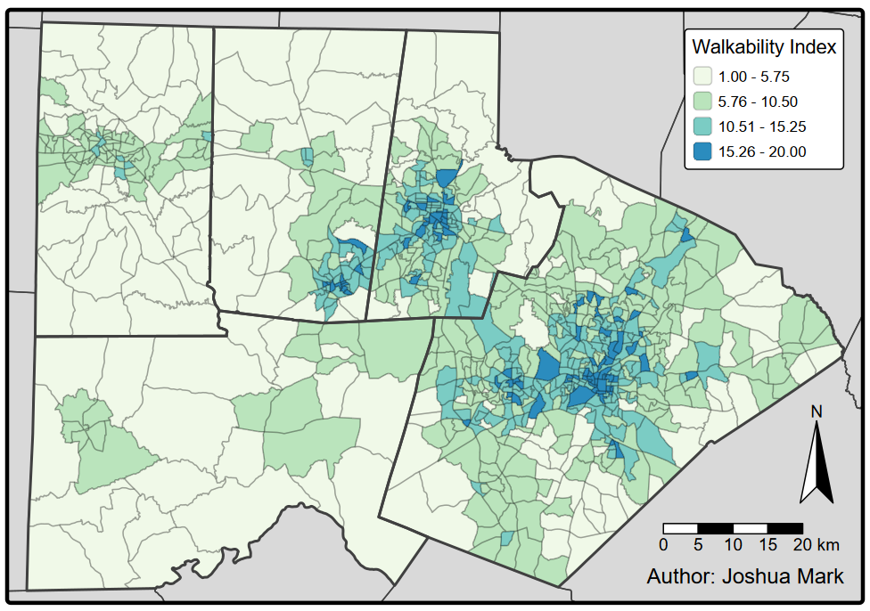
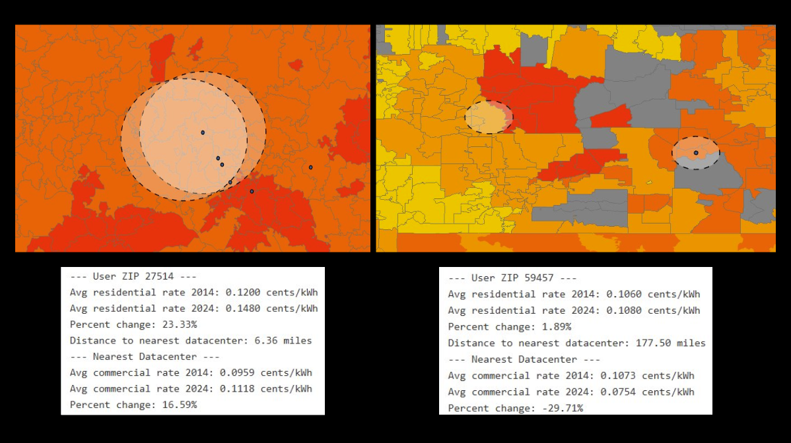
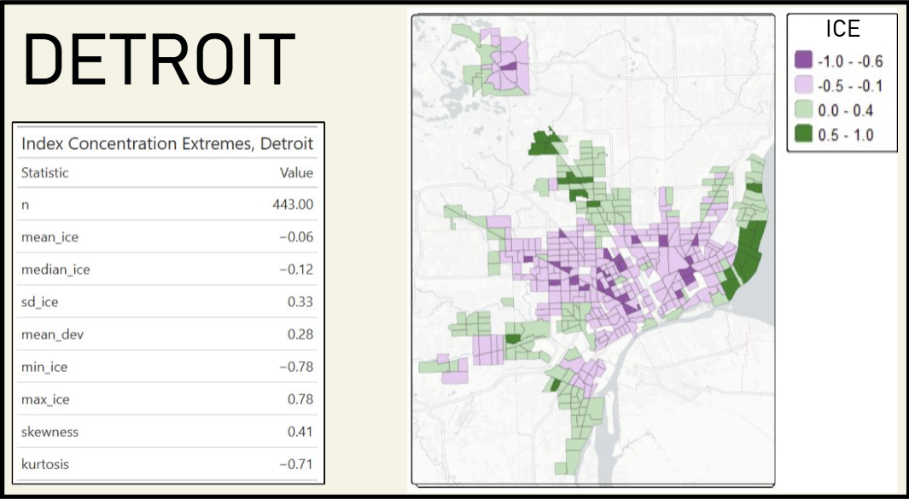
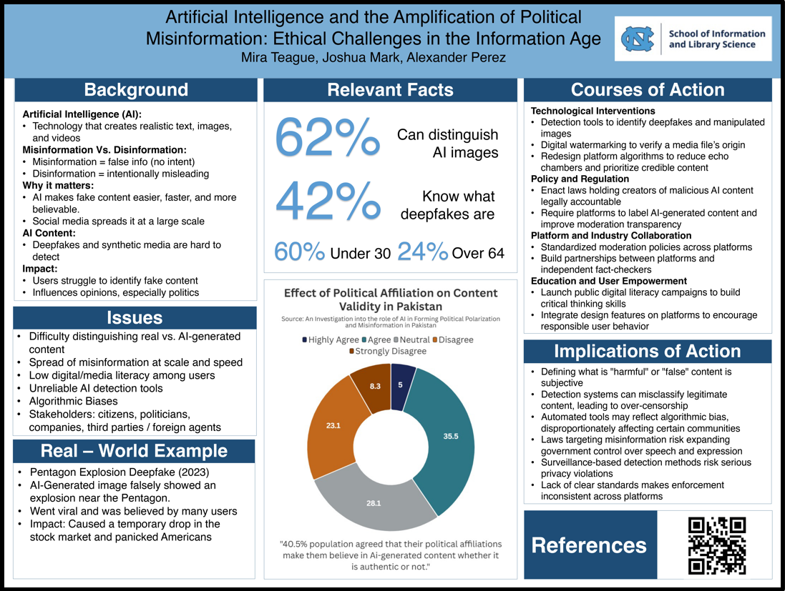

{kind=link}

NC Triangle Walkability Analysis
A research report using R data pipelines to download, clean, analyze, and visualize the EPA Walkability Index and its relationship with income in the NC Triangle.
I'm a fourth-year at UNC Chapel Hill pursuing degrees in Geospatial Data Science and Information Science. I have a background in academic research, statistics, data cleaning, and spatial / nonspatial data analysis.
I have worked with a variety of GIS tools, including ArcGIS Pro, QGIS, and GeoDa. My programming experience includes python (ArcPy, pandas), R (tidyverse, tmap, terra, tigris), SQL, and web development using HTML, CSS, and PHP.
I am currently seeking internship or entry-level positions to follow my May 2027 graduation. Feel free to explore my resume using the link below, and scroll down to look into some of my recent projects.
For more detailed information on each project, check my LinkedIn project section for the full story. The links in the headers will link to either full reports / project repos or download options for standalone images.

A research report using R data pipelines to download, clean, analyze, and visualize the EPA Walkability Index and its relationship with income in the NC Triangle.

An ArcPy tool programmed to take a user-inputted ZIP Code and calculate statistics on comparative electricity prices and data center proximity, alongside a time-series comparison.

A map made in QGIS print layout to display residential access to grocery stores using ORS road-based network isochrones. Used SQL commands and vector tools to highlight residential areas.

An R Markdown analysis integrating historical research, exploratory analysis, and regression modeling to compare segregation patterns across Detroit, MI and Tampa, FL.
![A scatter plot of NC counties with community social vulnerability in X and FIFA Hurricane Risk Score in Y. Counties impacted by Helene are marked in red (as opposed to gray), and size is adjusted based on death count within counites. Text highlights the county with the highest death toll, 'Buncombe County, 42 deaths.' There is a cluster of red counties in high vulnerability, low hurricane risk. A box surrounds the cluster with the text, 'not prepared for hurricanes. High vulnerability = difficult recovery.](images/fulls/05.png)
A graphic made in Flourish highlighting NC counties, showing that those impacted by Hurricane Helene were often marked low on hurricane risk and high on social vulnerability.

Researched, designed, and presented relevant facts on AI and political misinformation within a group of three for a departmental symposium, winning runner-up after a tiebreaker.
I'm always interested in connecting with people. Feel free to reach out if you'd like to ask questions about my work, coordinate future collaboration, or simply discuss anything GIS.
{kind=link}
{kind=link}
{kind=link}
{kind=link}
{kind=link}